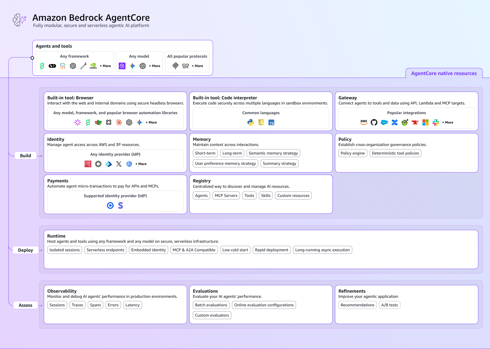

Overview
Amazon Bedrock AgentCore is a managed AWS platform for running AI agents in production. It handles the infrastructure required to securely execute, monitor, and scale agents while allowing developers to build them using their preferred frameworks and foundation models. Instead of managing servers, authentication, and monitoring yourself, AgentCore provides these capabilities as managed services so you can focus on developing your agent's functionality.

Key Characteristics
Prerequisites
- Requirement One
- Requirement Two
- Requirement Three
Installation
Example command goes hereCore Services
Explain how the system works.

Examples
// Example code blockReference
| Property | Description |
|---|---|
| Example | Description goes here. |